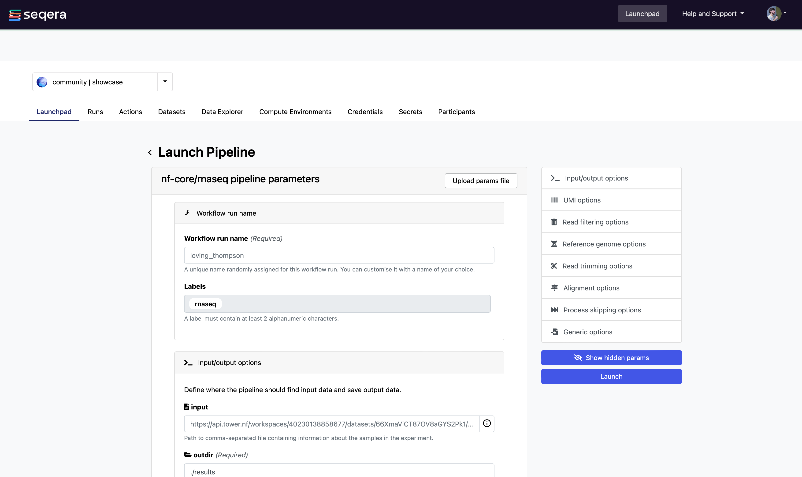
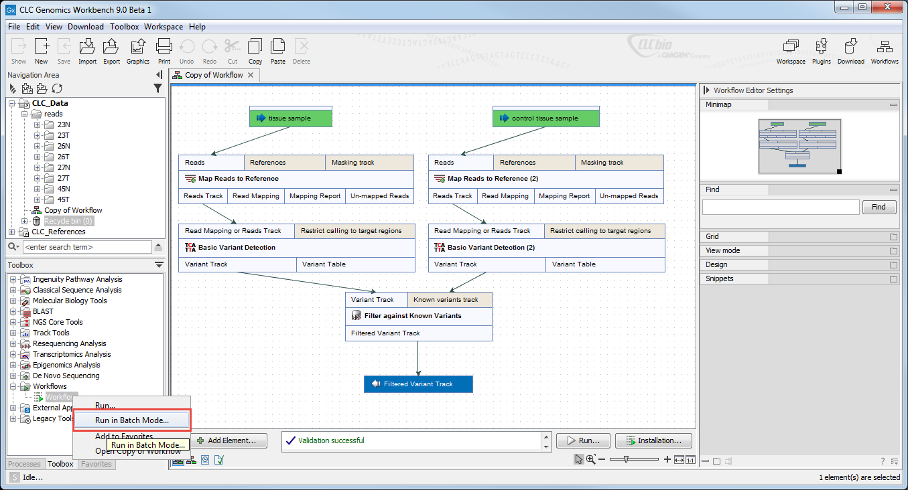
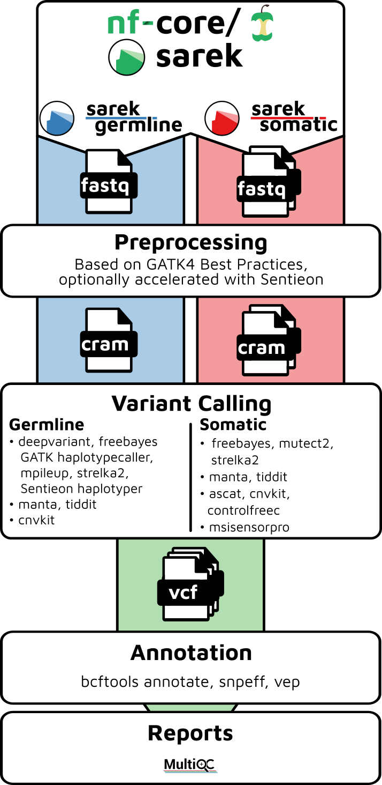
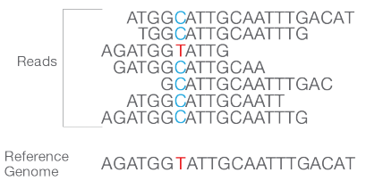
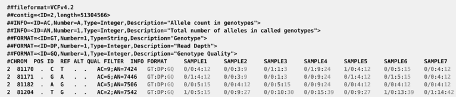

A primer to applied Bioinformatics
Index
Why bioinformatics
what is bioinformatics
how to run an analysis
cloud/proprietary/oss
workflow systems clc,wdl,nextflow
sequence alignment and bam files
variant calling and vcf files
variant annotation vcf/excel
future development and feedback sources
why bioinformatics
Software is needed in diagnosis, treatment, research
analyse complex biological processes
collect and manage biological knowledge
specific and big datasets, files, tasks
what is bioinformatics
in praxis: run and develop genetic analysis software
processing of DNA and protein sequences
specific databases and search engines
machine learning, statistics
run an analysis in the browser

seqera cloud
run an analysis with an desktop app

desktop application: qiagen clc genomics workbench
run an analysis with the commandline
nextflow run nf-core/sarek \ -profile ukb_profile \ --input samplesheet.csv \ --outdir output_folder
genetic analysis pipeline: sarek
software for running pipelines: nextflow
analysepipelines, example: sarek

sequence alignment and bam files
DNA Sequencer Device outputs reads (digital dna fragments, .fastq file)
align the reads to reference DNA (refgenome)
output is a "binary alignment map" (.bam file)

variant calling and vcf files
detect genetic variations (mutations)
variant caller produces "variant call format" (.vcf file)

variant annotation
semi-manually classify harmful/harmless variants
uses tools, expert knowledge, vcf files, excel, literature research
deliver diagnosis and possibly recommend treatment options
future development and feedback
improve patient treatment
increase bioinformatics expertise
reduce software infrastructure risks and costs
provide and extend statistical data for cancer research
{kind=link}
{kind=link}